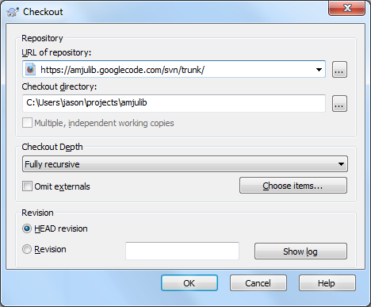
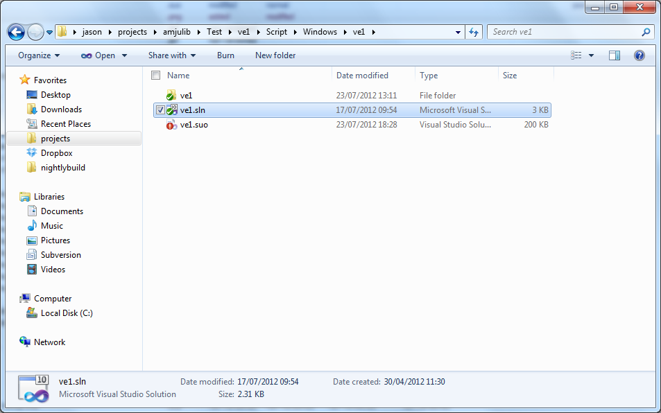

Information for developers
Information for developers
Firstly, thanks for helping me with this project!!
Bug database
Please report bugs and ideas for enhancements in the bug database.
Check out source and build
This project is in an svn repository on googlecode. Please email me with your google email address to be added to the project.
 To check out the source code on Windows:
To check out the source code on Windows:

To build the project:

To check out the source code on Mac OS X:
cd ~/my_projects_dir
svn co https://amjulib.googlecode.com/svn/trunk/ ./amjulib cd amjulib/Script/MacOSX
export AMJULIB_MAC_SCRIPT_PATH=`pwd`
make
cd ../../Test/ve1/Script/MacOSX
make
make release
make run